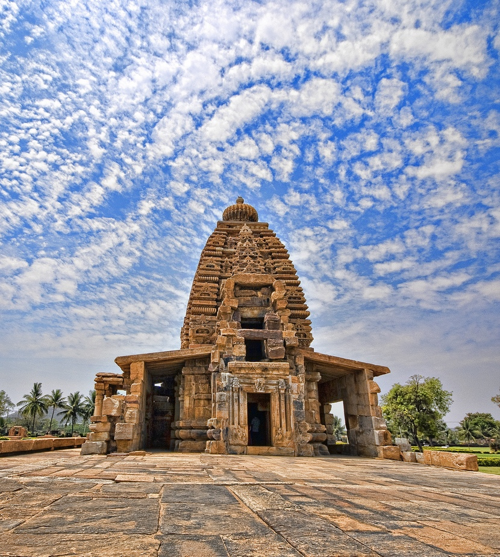

The Badami Caves complex is not technically a UNESCO World Heritage, not just yet,
but they are a candidate under the title, Evolution of Temple Architecture – Aihole-Badami-Pattadakal of UNESCO.

Cave 1
This is Shaivite cave. The important carvings in this cave are an 18-armed dancing Shiva, a two-handed
Ganesha, Mahishasura Mardini, Ardha Nareeshwara & Shankarnarayana. The ceiling is adorned by a serpent
motif & other carved figures.
Cave 2
This cave has Vaishnavite influence with panels of Trivikrama & Bhuvaraha.
On the ceilings are carvings of Anantasayana, Brahma, Vishnu, Shiva &other Ashtadikpalas
Cave 3
Another flight of steps takes one to the third cave which is the largest & the best of the lot. This cave
has carvings pertaining to both Shaivite & Vaishnavite themes. Panels of Trivikrama, Narasimha,
Shankaranarayana, Bhuvaraha, Anantasayana & Harihara are engraved in a vigorous style. An inscription found
here records the creation of the shrine by Mangalesha in 578 AD. There are some fine bracket figures on the
pillars of this cave
Cave 4
Lying to the east of cave three, the fourth cave is Jain. There is an image of Mahavira adorning the sanctum.
Other carvings here are of Padmavathi & other Thirthankaras. Asteep climb up some steps cut in a crevice between
Cave II & III leads to the southern part of Badami Fort & to an old gun placed there by Tippu Sultan.

Strategically situated on top of the hill, the fort encloses large granaries, a treasury impressive temples on
top of the northern end of the hill. Malegitti Shivalaya, perhaps the oldest temple of the lot, is dedicated to
the benign aspect of Shiva as the garland maker. Placed on the summit of a rocky hill, the temple is built of
stone, finely joined without mortar, & with Dravidian tower. The lower Shivalaya has a Dravidian tower of which
only the sanctum remains now.
Badami was the capital of the Chalukyas from 540 AD to 757 AD. The Badami Fort was the residence of the Chalukyan
rulers. The fort was plundered and destroyed by the Pallavas in 642 AD. Much later, when Badami came under the rule
of Tipu Sultan, the walls of the fort were rebuilt and several structures were added to the ancient fort complex.
Location:
Badami lies at a distance of about 509 km from Bangalore. Badami is a tourist destination and can be conveniently
reached by various means of transport. Autos and horse-drawn carriages (tongas) can be hired to reach the base of
the hill housing the Badami Fort from anywhere in Badami.

The Galaganatha temple lies to the east of the Jambulingeshwara temple. Unlike the previous two temples, ASI
estimates this temple to be from the mid-8th century, whereas Michell states that it is likely from late 7th
century. The temple is a northern rekha-nagara style with a linga, and a vestibule (antarala) within the temple
sanctum (garbha griha). Outside the temple is a seated Nandi that faces the sanctum.[29]The sanctum has a covered
circumambulatory path (pradakshina patha), indicating that this Hindu tradition was well established by 7th to 8th
century. Various mandapas exist in this temple, such as a social or community hall (sabha mantapa), used for
ceremonial functions, and a mukha mantapa, of
Location:
The Pattadakal monuments are located in the Indian state of Karnataka, about 165 kilometres (103 mi) southeast of
Belgaum, 265 kilometres (165 mi) northeast from Goa, 14 miles (23 km) from Badami, via Karnataka state highway SH14,
and about 6 miles (9.7 km) from Aihole, set midst sandstone mountains and Malaprabha river valley. In total, there
are over 150 Hindu, Jain, and Buddhist monuments, and archaeological discoveries, dating from the 4th to 10th century
CE, in addition to pre-historic dolmens and cave paintings that are preserved at the Pattadakal-Badami-Aihole site.